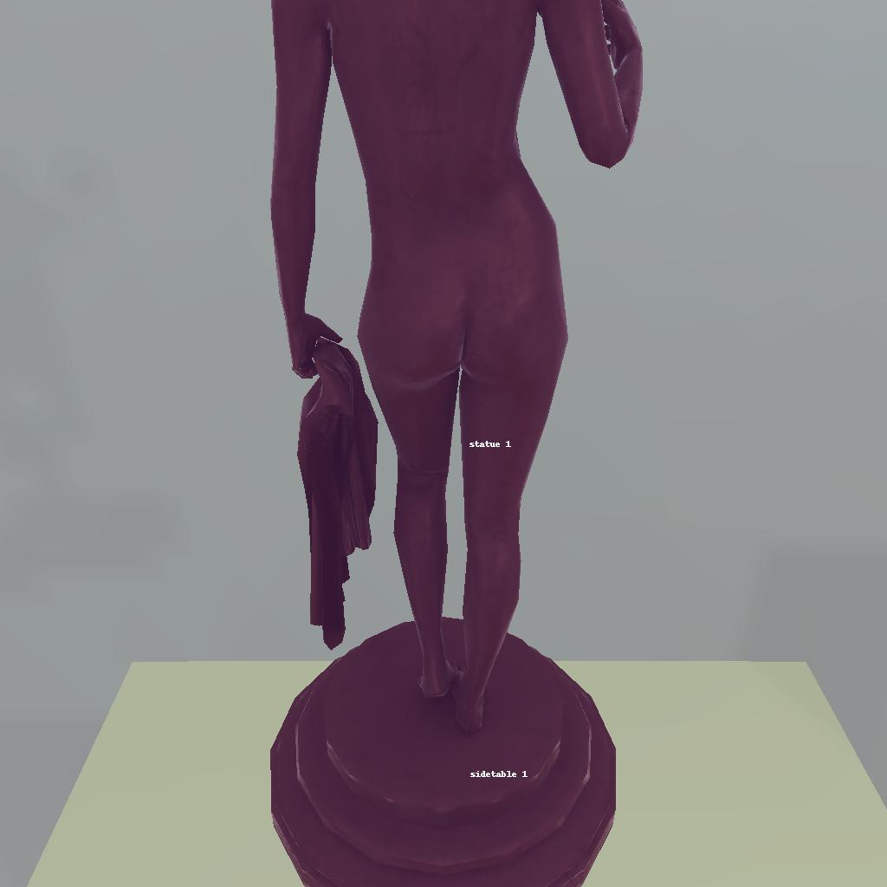

---------------------------------------------------------task: 4---------------------------------------------------------
--------------------------------------------------------------------------------------------------------------------------------------------------------------------
--------------------------------------------------------------------------------------------------------------------------------------------------------------------
Step:--------------------------------------------------------------------------7-------------------------------------------------------------------------------
----------------------------------------
VLM Prompt:
Image1:
Image2:
**Instruction**
1. Analyze the provided image to identify all visible household objects, focusing on those relevant to the task description "examine the statue with the floorlamp."
2. Use the analysis of the image and the task hint "The agent must find an object of the desired type, locate and turn on a light source with the desired object in-hand." to answer the question: what is the most reasonable action in the choices for the task description "examine the statue with the floorlamp"?
4. Decide and write the answer using the template: The answer is: (i): , where i is the real number. If there is no desired object in the image, search every place based on **Initial Observation** to find the object. And if no one is exactly correct, choose a similar answer.
**Initial Observation**
You are in the middle of a room. Looking quickly around you, you can see armchair (1), coffeetable (1-2), sidetable (1), garbagecan (1), drawer (1), sofa (1), diningtable (1)
**Answer Choices**
(1): go to armchair 1
(2): go to coffeetable 1
(3): go to garbagecan 1
(4): go to drawer 1
(5): go to sofa 1
(6): go to coffeetable 2
(7): go to diningtable 1
(8): examine statue 1
**Answer**
Let's think step by step by following the instructions.
----------------------------------------
----------------------------------------
Original Response:
Firstly, we need to identify all visible household objects in the provided image. The image shows a statue on a sidetable, which is relevant to the task description "examine the statue with the floorlamp."
Next, according to the task hint, the agent must find an object of the desired type, locate and turn on a light source with the desired object in-hand. However, the image does not show a floorlamp or any other light source.
Based on the Initial Observation, we have a list of objects in the room, but none of them are a floorlamp. Since the task is to examine the statue with the floorlamp, and we do not see a floorlamp in the image, the most reasonable action would be to search the room to find one.
Since none of the answer choices directly mention finding or using a floorlamp, we must choose a similar answer that could potentially lead us to a floorlamp. Out of all the options, going to a drawer or a sidetable seems the most reasonable as these are places where one could potentially find a switch or a portable light source.
Since the statue is already on sidetable 1, and the task is to examine the statue with the floorlamp, it makes sense to check nearby places first. Therefore, the most reasonable action from the given choices would be:
The answer is: (4): go to drawer 1.
----------------------------------------
----------------------------------------
>>> Refine Original VLM Response and Get Pure Action: go to drawer 1
----------------------------------------
-----------------------------------------------------------------
Running time: 14.093682050704956 seconds
Total Money: 1.8688500000000001
-----------------------------------------------------------------
-----------------------------------------------------------------
Text Observation:You arrive at loc 4. The drawer 1 is closed.
-----------------------------------------------------------------
UNSUCCEED